5.2. Implementation of a basic model
We have introduced the ideas of a basic model in the previous section. We complete this model and implement it in this section.
5.2.1. The model completed
The model is defined in the NQueens() function. The beginning of the function shouldn’t surprise you:
void NQueens(int size) {
CHECK_GE(size, 1);
Solver s("nqueens");
// model
std::vector<IntVar*> queens;
for (int i = 0; i < size; ++i) {
queens.push_back(s.MakeIntVar(0, size - 1,
StringPrintf("queen%04d", i)));
}
s.AddConstraint(s.MakeAllDifferent(queens));
...
This 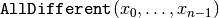 basically ensures no two queens remain on the same row but we could have a solution like the one depicted on the next Figure A solution with no queen on the same row..
A solution with no queen on the same row.
Of course, this is not what we want. To forbid two queens to be on the
same diagonal with slope 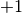 (diagonals that slope up-and-right), we could impose
non-equality relations between our variables. For instance, to impose that the first queen
represented by  doesn’t attack any other queen on those diagonals, we can impose that
doesn’t attack any other queen on those diagonals, we can impose that
(1)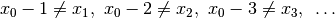
(1) is equivalent to
(2)
Take the second queen 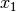. We only have to look for the queens to her right. To impose that doesn’t attack any queen 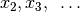 on a diagonal with slope , we can add
(3)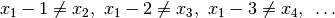
or equivalently
(4)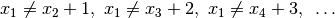
In general, for queen  , we impose that 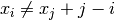.
Now, here comes the trick. If you add
, we impose that 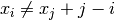.
Now, here comes the trick. If you add  to all members of (4),
you get
to all members of (4),
you get
(5)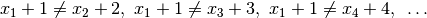
and more generally becomes simply 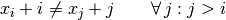[1].
This means that we can restrict ourselves to inequalities only involving 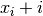 terms. Each of these terms must be different from all others. Doesn’t this ring a bell? Yep, this is the AllDifferent constraint:
(6)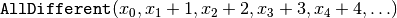
With a similar reasoning,
(7)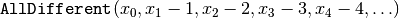
ensures that no two queens are on the same diagonal with slope 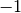 (diagonals that slope down-and-right).
We can thus add:
std::vector<IntVar*> vars(size);
for (int i = 0; i < size; ++i) {
vars[i] = s.MakeSum(queens[i], i)->Var();
}
s.AddConstraint(s.MakeAllDifferent(vars));
for (int i = 0; i < size; ++i) {
vars[i] = s.MakeSum(queens[i], -i)->Var();
}
s.AddConstraint(s.MakeAllDifferent(vars));
To collect the first solution and count all the solutions, we use SolutionCollectors as usual:
SolutionCollector* const solution_counter =
s.MakeAllSolutionCollector(NULL);
SolutionCollector* const collector = s.MakeFirstSolutionCollector();
collector->Add(queens);
std::vector<SearchMonitor*> monitors;
monitors.push_back(solution_counter);
monitors.push_back(collector);
We keep our basic search strategy:
DecisionBuilder* const db = s.MakePhase(queens,
Solver::CHOOSE_FIRST_UNBOUND,
Solver::ASSIGN_MIN_VALUE);
s.Solve(db, monitors); // go!
In the next sections, we will test different DecisionBuilders. To help us print and test solutions for the n-Queens Problem, we will use two helper functions defined next.
5.2.2. The helper functions
The header nqueens_utilities.h contains some helper functions: among other CheckNumberOfSolutions() to check the known number of solutions (unique or distinct) of the n-Queens Problem and several functions to print the solutions recorded by a SolutionCollector.
To be able to collect only unique solutions (up to a symmetry), we will use SymmetryBreakers in the section Breaking symmetries with SymmetryBreakers.
To test our model (and the solver!), we use the function CheckNumberOfSolutions() to check the number of known solutions, unique up to a symmetry when we use SymmetryBreakers and otherwise distinct:
void CheckNumberOfSolutions(int size, int num_solutions) {
if (FLAGS_use_symmetry) {
if (size - 1 < kKnownUniqueSolutions) {
CHECK_EQ(num_solutions, kNumUniqueSolutions[size - 1]);
} else if (!FLAGS_cp_no_solve) {
CHECK_GT(num_solutions, 0);
}
} else {
if (size - 1 < kKnownSolutions) {
CHECK_EQ(num_solutions, kNumSolutions[size - 1]);
} else if (!FLAGS_cp_no_solve) {
CHECK_GT(num_solutions, 0);
}
}
return;
}
kNumUniqueSolutions[] and kNumSolutions[] are static arrays with the proven number of solutions. We restrict ourselves to testing the number of all distinct solutions up to kKnownSolutions = 18 and unique solutions up to kKnownUniqueSolutions = 19. By unique solution we mean a unique solution up to a symmetry (see the section Breaking symmetries with SymmetryBreakers for more).
The print helper functions are all based on PrintSolution():
void PrintSolution(const int size,
const std::vector<IntVar*>& queens,
SolutionCollector* const collector,
const int solution_number) {
if (collector->solution_count() > solution_number && size < 100) {
// go through lines
for (int j = 0; j < size; ++j) {
// go through queens
for (int i = 0; i < size; ++i) {
const int pos =
static_cast<int>(collector->Value(solution_number, queens[i]));
std::cout << std::setw(2);
if (pos == j) {
std::cout << i;
} else {
std::cout << ".";
}
std::cout << " ";
}
std::cout << std::endl;
}
}
return;
}
You might wonder why we cast the return value of collector->Value() into an int? The value() method returns an int64.
5.2.3. The whole program bundled
To compile our NQueens() function, we need some headers.
After the needed headers from the or-tools library:
#include "base/commandlineflags.h"
#include "base/logging.h"
#include "base/stringprintf.h"
#include "constraint_solver/constraint_solver.h"
we add our header:
#include "nqueens_utilities.h"
A boolean gflag FLAGS_use_symmetry allows or disallows the use of SymmetryBreakers. This flag is defined in the header nqueens_utilities.h. To be able to use it in our main file, we need to declare it:
DECLARE_bool(use_symmetry);
For the moment we don’t implement any symmetry related mechanism and abort in the main function if FLAGS_use_symmetry is set to true:
int main(int argc, char **argv) {
google::ParseCommandLineFlags(&argc, &argv, true);
if (FLAGS_use_symmetry) {
LOG(FATAL) << "Symmetry breaking methods not yet implemented!";
}
if (FLAGS_size != 0) {
operations_research::NQueens(FLAGS_size);
} else {
for (int n = 1; n < 12; ++n) {
operations_research::NQueens(n);
}
}
return 0;
}
We offer the possibility to print the first solution (flag print set to true) or all solutions (flag print_all set to true). By default, the program doesn’t output any solution.
5.2.4. First results
Because finding all solutions is hard, we expect the solver to face more and more
difficulties as the size  grows but
what about the easy problem of finding only one solution?
grows but
what about the easy problem of finding only one solution?
In the file nqueens2.cc, we stop the search as soon as a solution has been found.
The following Table collects the results of our experiment with the same DecisionBuilder and same model as above. The results are given in seconds.
| Problem | 10 | 11 | 12 | 13 | 14 |
|---|---|---|---|---|---|
| First solution | 0 | 0 | 0 | 0 | 0,003 |
| All Solutions | 0,055 | 0,259 | 1,309 | 7,059 | 40,762 |
To find all solutions, the solver shows a typical exponential behaviour for intractable problems. The sizes are too small to conclude anything about the problem of finding one solution. In the next Table, we try bigger sizes. The results are again in seconds.
| Problem | 25 | 26 | 27 | 28 | 29 | 30 | 31 |
|---|---|---|---|---|---|---|---|
| First solution | 0,048 | 0,392 | 0,521 | 3,239 | 1,601 | 63,08 | 14,277 |
It looks like our solver has some troubles to find one solution. This is perfectly normal because we didn’t use a specific search strategy. In the rest of this chapter, we will try other search strategies and compare them. We will also customize our strategies, i.e. define strategies of our own but before we do so, we need to learn a little bit about the basic working of the solver.
Wikipedia[2] has a very nice animation of our search strategy (CHOOSE_FIRST_UNBOUND and ASSIGN_MIN_VALUE) to find the first feasible solution:
Compare the output of:
./nqueens1 -size=8 -print
 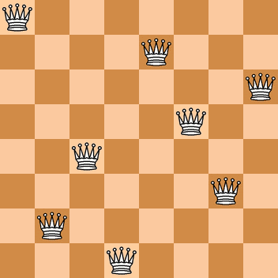
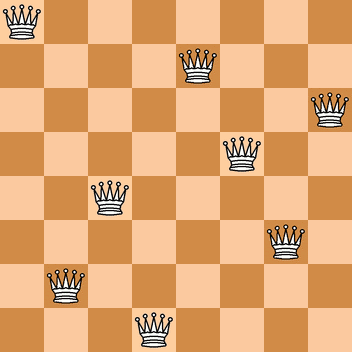
Footnotes
| [1] |  simply means that we consider all simply means that we consider all  greater than greater than  . . |
| [2] | https://en.wikipedia.org/wiki/Eight_queens_puzzle#Animation_of_the_recursive_solution |
Google or-tools |
User's Manual
Google search
Welcome
Tutorial examples
Current chapter
5. Defining search primitives: the n-Queens Problem
Previous section
Next section
5.3. Basic working of the solver: the search algorithm